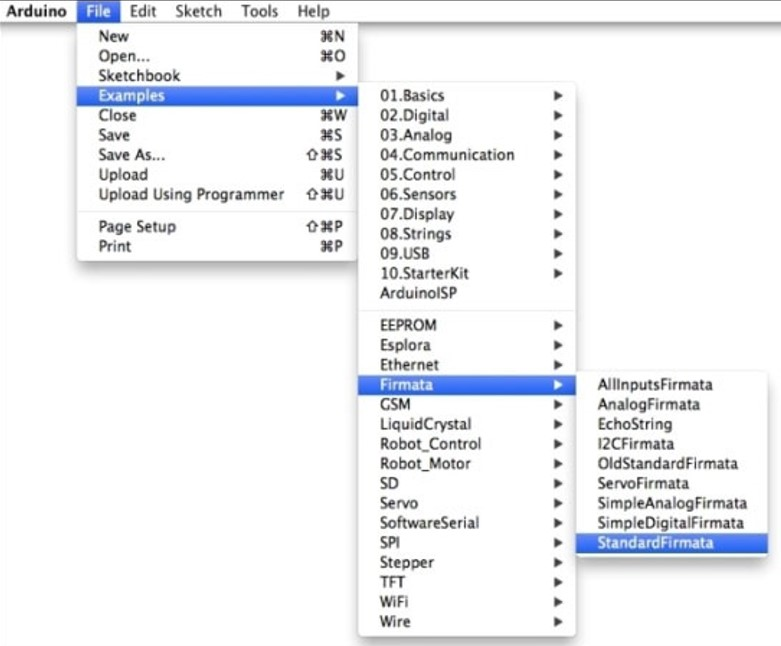

Classical conditioning
Fixed ratio schedule opreant conditioning
Progressive ratio schedule opreant conditioning
Variable ratio schedule opreant conditioning
Discriminative stimuli conditioning
This project is designed for classical conditioning, operant conditioning (divided into three modes: fixed ratio operant conditioning, progressive ratio operant conditioning and variable ratio operant conditioning) and SD conditioning experiment. And various conditioning modes are covered.
Both hardware (included pre-settings) and software are detailed introduced in this guide, which aims to make user easily complete the experiment.
The procedure is mainly to ask user to input parameters used to implement conditioning experiment and automatically take actions according to what the rat has done for each conditioning method and criterion.
During the experiment, the detailed actions are all saved in the file which can be approached by user to help do further analysis.
All the codes for this project are based on Python 3 instead of version 2.x.
a) Open ‘Device Manager’ to figure out what is port name for Arduino board.
b) In Arduino IDE, make sure to select corresponding ‘Board’ (Arduino Uno) and ‘Serial Port’ (the name you check last step) in ‘Tool’.
c) Open the ‘StandardFirmate’ followed the path: File -> Examples -> Firmata -> StandardFirmata. Compile and upload it to your board by clicking the check mark then the right-directed arrow.
